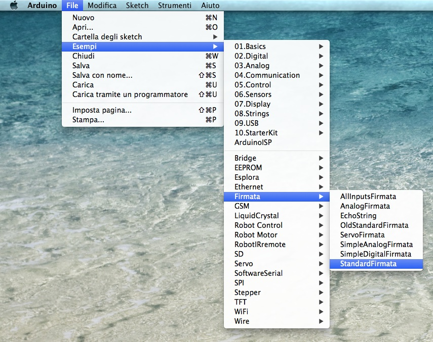
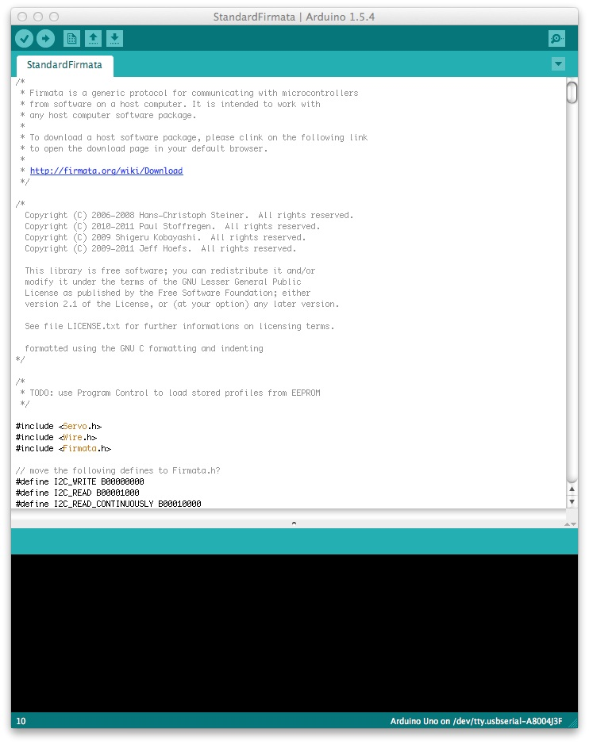
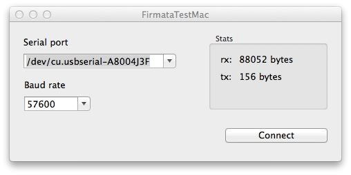
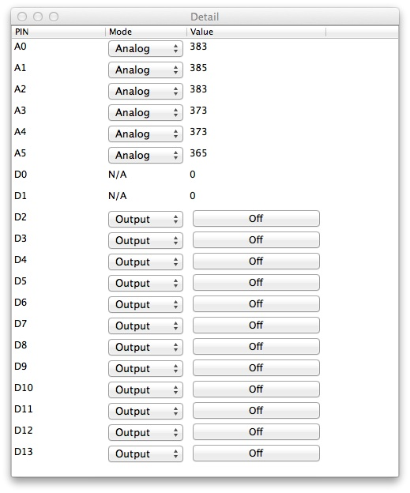

I'm releasing today a small wrapper framework and test program for Arduino Firmata protocol.
The project is hosted on github: http://github.com/fibasile/Firmata-ObjC and released with the MIT License.
Read on to learn more about it.
About firmata
The firmata protocol was designed to allow programmers to control Arduino pins from any programming language running on a host system.
The latest 2.3 protocol version allows to:
-
discover pins available on the board
-
set pin modes to Analog, Input, Output, Servo and PWM
-
read input and output values
The Firmata protocol supports most of the Arduino variants, and can be easily installed to the board as it's distributed with the standard Arduino IDE.
To install it just fire the Arduino IDE and go to the File > Examples > Firmata > StandardFirmata menu

And then upload the firmata sketch using the right arrow.

This basically provides a convenient way to write code for Arduino without ever changing the sketch uploaded to the board, and also to control your Arduino projects from your Mac.
Getting started
First of all you should download the framework and test project:
$ git clone git@github.com:fibasile/Firmata-ObjC.git
And ORSSerialPort submodule:
$ cd Firmata-Objc
$ git submodule init
$ git submodule update
In the Mac/FirmataTestMac folder you will find the example project.
In the Library folder you will find the actual library files. You can drop these into your project to use the Library.
If you compile and run the FirmataTestMac you should get a window prompting for the serial connection parameters:

Choose the serial port where Arduino is plugged in, and the Standard Firmata 57600 baud rate. Please note you need to plug it before running the project. Hit connect, and after few seconds you should get the following window:

This allows you to set the pin modes, change the values when Output mode is selected and so on.
To test everything works, set the pin D13 to Output and hit the button several times. You should see the LED on your arduino board flashing.
If it's not, check your serial port and baud rate settings (especially if other software is using it). Make sure you hit disconnect in the first window when you quit so you don't leave the serial port locked.
Using Firmata-ObjC in your project
Since you need to communicate with the board using a serial port, in the deps folder the ORSSerialPort framework allows to access the unix-like serial port of your Mac.
This adds an additional dependency, you should include the IOKit.framework into your project to make it work.
Take a look at the test program to see an example.
The framework is structured around the ADArduino class, which needs a ADUnixSerialPort to be initialized, so you will write something like:
ADUnixSerialPort* port = [[ADUnixSerialPort alloc] initWithDevice:path baudRate:(int)baud timeout:3];
ADArduino* arduino = [[ADArduino alloc] initWithSerial:port];
The ADArduino class needs to query the Firmata sketch on the board to know which pins are available, which protocol version is used and so on. This is done using a block based callback:
__block ADArduino* _warduino = arduino;
[arduino connectWithBlock:^{
NSLog(@"Arduino connected");
NSLog(@"Arduino Firmata version %@ %@",[_warduino firmataVersion], [_warduino firmataVersionString]);
NSLog(@"Analog pins %@", _warduino.analogPins);
NSLog(@"Digital pins %@", _warduino.digitalPins);
// now you can update the gui and start sending messages
}];
After this initialization is complete you can access the pins in the analogPins and digitalPins properties.
All pins are instances of the ADArduinoPin class, which provides the following:
- number: the number of the pin (for the digital pins)
- isAnalogPin: true if it's one of the analog capable A0-Ax pins
- analog_channel: the pin number for analog pins
- mode: a numeric property to change the mode using the constants (MODE_INPUT, MODE_OUTPUT, etc)
- currentMode: a string description of the current pin mode
- availableModes: an array of strings describing the supported modes for the pin (Analog,Input,Output,Servo,PWM)
For example to set the D13 pin to Output and On one would do:
ADArduinoPin *pin = [arduino.digitalPins objectAtIndex:13];
pin.mode = MODE_OUTPUT;
pin.value = 1;
that's it!
When finished with the Arduino board, in order to unlock the serial port, it's necessary to call:
[arduino stopListening];
Conclusion
The Firmata-ObjC Framework makes it finally easy to establish a communication between Arduino and the Mac apps.
I plan to add support for other communication channels, namely Bluetooth Low Energy, Bluetooth 2.0, Wifi and Ethernet Shields.
The first should be quite easy and will allow to port the framework to the iOS devices supporting BLE.
Hope you find the framework useful for your projects. Open an issue on GitHub if you find any problems.
Comments !